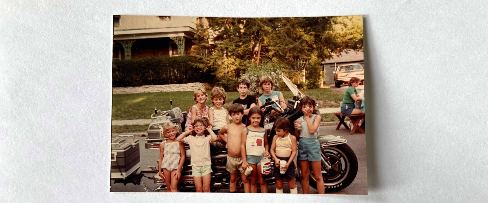

McNeill, Zane. Be Gay, Do Crime: Everyday Acts of Queer Resistance and Rebellion. P M Press, 2025
Washington, Brian. “You Miss it When it’s Gone.” New Yorker, June 1, 2020
Westlund, Clovis. “Queer Liberation and Intimacy: A Collective Journey,” Medium, June 2, 2022
Weststrate NM, Turner K, McLean KC. Intergenerational Storytelling as a Developmental Resource in LGBTQ+ Communities. J Homosex. 2024 Jun 6;71(7):1626-1651. doi: 10.1080/00918369.2023.2202295. Epub 2023 Apr 27. PMID: 37104778.
Weststrate, N. M., McLean, K. C., & Fivush, R. (2024). Intergenerational Storytelling and Positive Psychosocial Development: Stories as Developmental Resources for Marginalized Groups. Personality and Social Psychology Review, 28(4), 351-371.